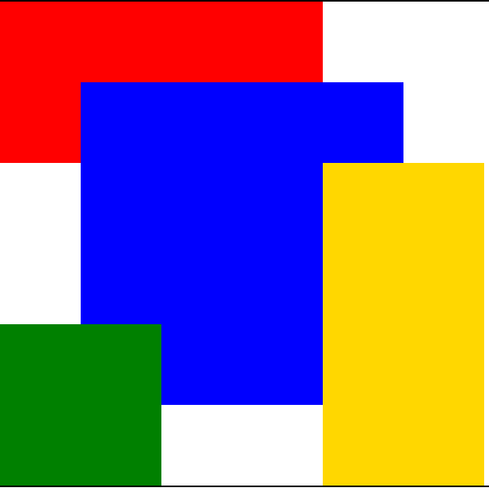
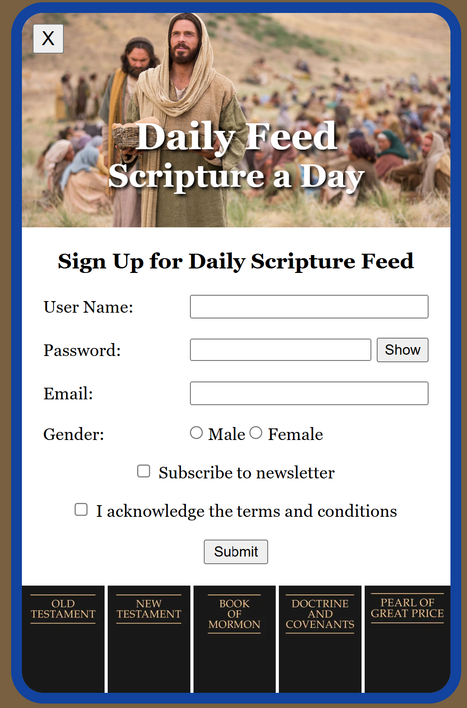

Apostles
I practiced using HTML and CSS to display the First Presidency and Quorum of the Twelve Apostles.
View ApostlesWDD 130 Coding Practice
Choose an ICE challenge to review my coding practice and progress.
I practiced using HTML and CSS to display the First Presidency and Quorum of the Twelve Apostles.
View Apostles
I learned how to create a profile card for President Dallin H. Oaks using HTML and CSS.
View Oaks
I practiced creating HTML tables, placing images, and applying CSS styling.
View Favorite Devotional
I learned how to use themed colors, custom fonts, and CSS styling to create a holiday webpage.
View Holiday Page
This challenge helped me practice CSS Grid placement, overlapping elements, and z-index.
View CSS PositioningI practiced using image thumbnails and links to create an interactive gallery.
View Christ Art Gallery
I practiced creating a signup form, using images, and displaying form data with JavaScript.
View Daily Feed Signup Form